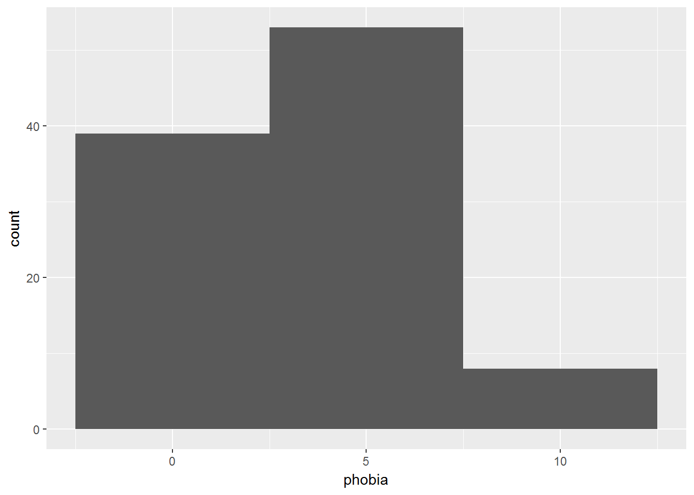
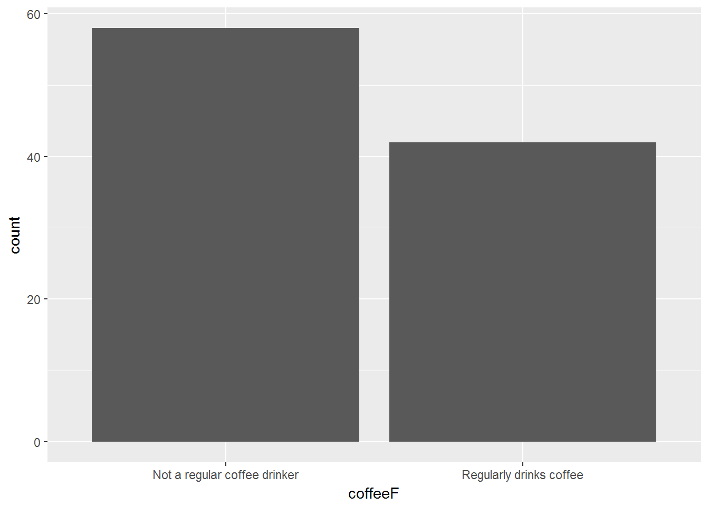
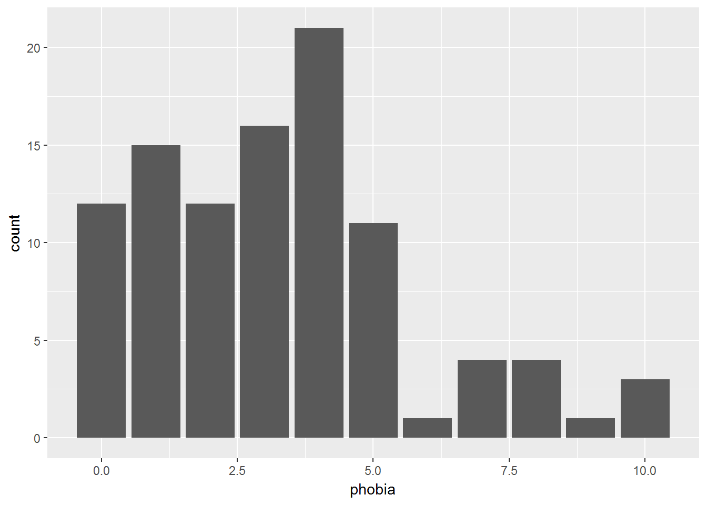
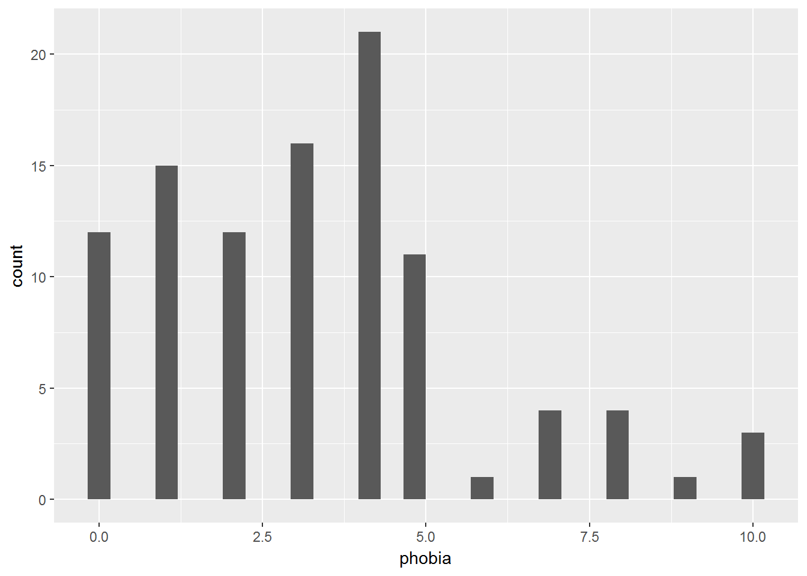
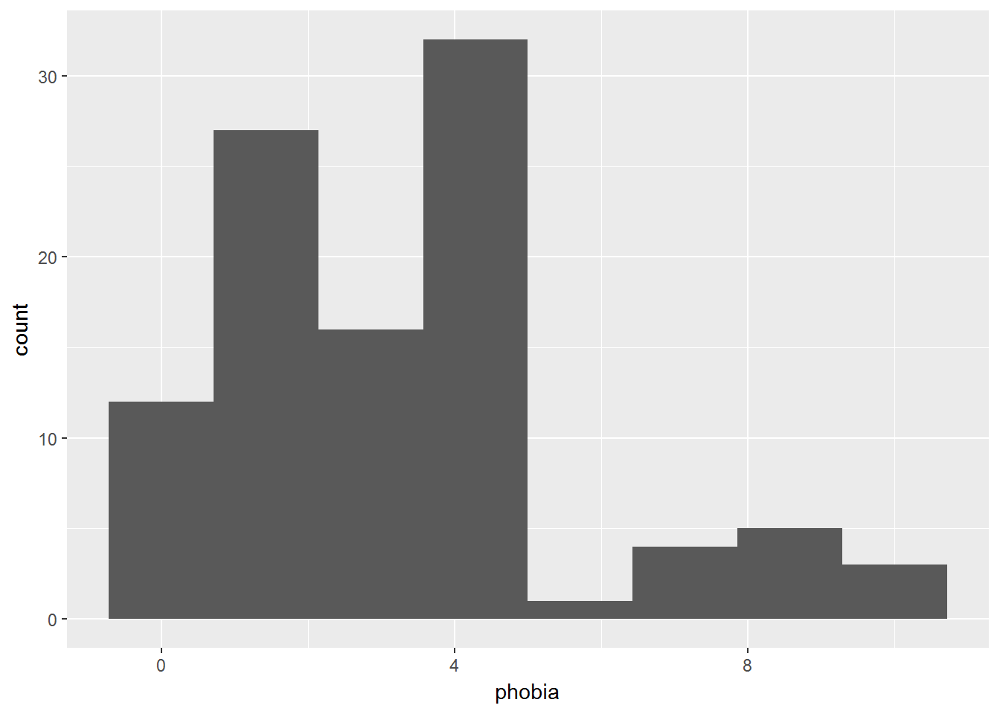
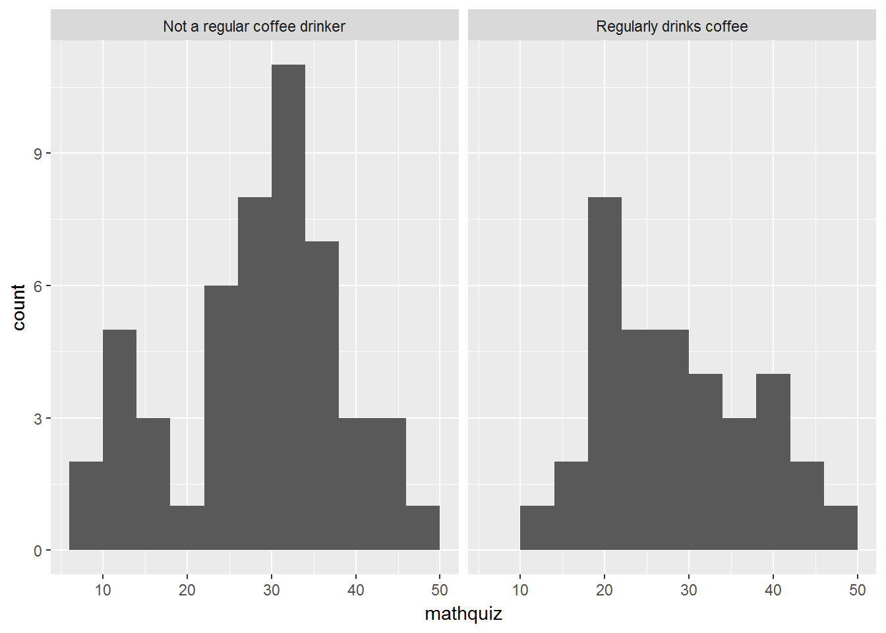
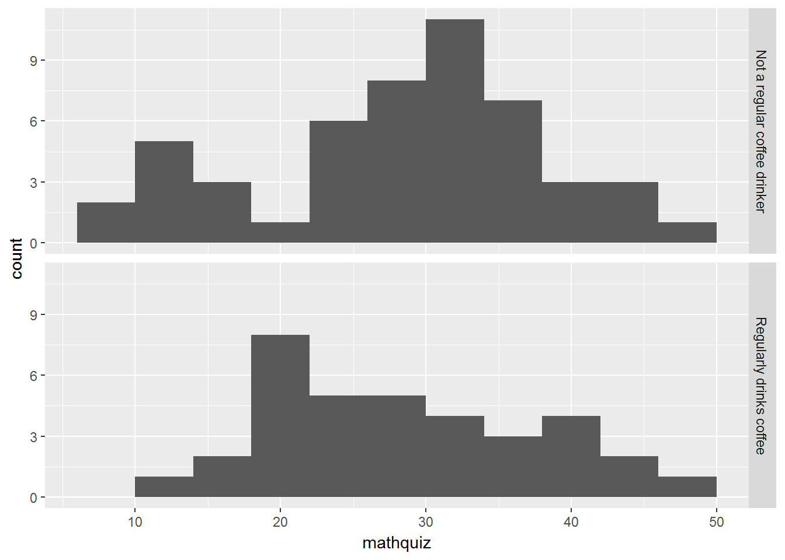

Chapter 2 EXAMINING A DISTRIBUTION
Chapter Links
Assingment Links
Example: Ihno’s Experiment
This is the same dataset used in the previous chapter and in most of the textbook’s section C questions.
Required Packages
library(tidyverse) # Loads several very helpful 'tidy' packages
library(readxl) # Read in Excel datasets
library(furniture) # Nice tables (by our own Tyson Barrett)
library(psych) # Lots of nice tid-bitsData Import and Wrangling
The previous chapter build the following code to read in the dataset and prepare it for analysis.
data_clean <- read_excel("Ihno_dataset.xls") %>%
dplyr::rename_all(tolower) %>%
dplyr::mutate(genderF = factor(gender,
levels = c(1, 2),
labels = c("Female",
"Male"))) %>%
dplyr::mutate(majorF = factor(major,
levels = c(1, 2, 3, 4,5),
labels = c("Psychology",
"Premed",
"Biology",
"Sociology",
"Economics"))) %>%
dplyr::mutate(reasonF = factor(reason,
levels = c(1, 2, 3),
labels = c("Program requirement",
"Personal interest",
"Advisor recommendation"))) %>%
dplyr::mutate(exp_condF = factor(exp_cond,
levels = c(1, 2, 3, 4),
labels = c("Easy",
"Moderate",
"Difficult",
"Impossible"))) %>%
dplyr::mutate(coffeeF = factor(coffee,
levels = c(0, 1),
labels = c("Not a regular coffee drinker",
"Regularly drinks coffee"))) %>%
dplyr::mutate(hr_base_bps = hr_base / 60) %>%
dplyr::mutate(anx_sum = rowsums(anx_base, anx_pre, anx_post)) %>%
dplyr::mutate(hr_mean = rowmeans(hr_base + hr_pre + hr_post)) %>%
dplyr::mutate(statDiff = statquiz - exp_sqz)tibble::glimpse(data_clean)Observations: 100
Variables: 27
$ sub_num <dbl> 1, 2, 3, 4, 5, 6, 7, 8, 9, 10, 11, 12, 13, 14, 15,...
$ gender <dbl> 1, 1, 1, 1, 1, 1, 1, 1, 1, 1, 1, 1, 1, 1, 1, 1, 1,...
$ major <dbl> 1, 1, 1, 1, 1, 1, 1, 1, 1, 1, 1, 1, 1, 1, 1, 1, 1,...
$ reason <dbl> 3, 2, 1, 1, 1, 1, 1, 3, 1, 1, 1, 1, 1, 3, 1, 1, 1,...
$ exp_cond <dbl> 1, 1, 1, 1, 1, 2, 2, 2, 2, 2, 2, 2, 2, 3, 4, 4, 4,...
$ coffee <dbl> 1, 0, 0, 0, 0, 1, 0, 1, 0, 1, 0, 0, 0, 0, 1, 1, 0,...
$ num_cups <dbl> 0, 0, 0, 0, 1, 1, 0, 2, 0, 2, 1, 0, 1, 2, 3, 0, 0,...
$ phobia <dbl> 1, 1, 4, 4, 10, 4, 4, 4, 4, 5, 5, 4, 7, 4, 3, 8, 4...
$ prevmath <dbl> 3, 4, 1, 0, 1, 1, 2, 1, 1, 0, 1, 0, 0, 1, 1, 0, 1,...
$ mathquiz <dbl> 43, 49, 26, 29, 31, 20, 13, 23, 38, NA, 29, 32, 18...
$ statquiz <dbl> 6, 9, 8, 7, 6, 7, 3, 7, 8, 7, 8, 8, 1, 5, 8, 3, 8,...
$ exp_sqz <dbl> 7, 11, 8, 8, 6, 6, 4, 7, 7, 6, 10, 7, 3, 4, 6, 1, ...
$ hr_base <dbl> 71, 73, 69, 72, 71, 70, 71, 77, 73, 78, 74, 73, 73...
$ hr_pre <dbl> 68, 75, 76, 73, 83, 71, 70, 87, 72, 76, 72, 74, 76...
$ hr_post <dbl> 65, 68, 72, 78, 74, 76, 66, 84, 67, 74, 73, 74, 78...
$ anx_base <dbl> 17, 17, 19, 19, 26, 12, 12, 17, 20, 20, 21, 32, 19...
$ anx_pre <dbl> 22, 19, 14, 13, 30, 15, 16, 19, 14, 24, 25, 35, 23...
$ anx_post <dbl> 20, 16, 15, 16, 25, 19, 17, 22, 17, 19, 22, 33, 20...
$ genderF <fct> Female, Female, Female, Female, Female, Female, Fe...
$ majorF <fct> Psychology, Psychology, Psychology, Psychology, Ps...
$ reasonF <fct> Advisor recommendation, Personal interest, Program...
$ exp_condF <fct> Easy, Easy, Easy, Easy, Easy, Moderate, Moderate, ...
$ coffeeF <fct> Regularly drinks coffee, Not a regular coffee drin...
$ hr_base_bps <dbl> 1.183333, 1.216667, 1.150000, 1.200000, 1.183333, ...
$ anx_sum <dbl> 59, 52, 48, 48, 81, 46, 45, 58, 51, 63, 68, 100, 6...
$ hr_mean <dbl> 204, 216, 217, 223, 228, 217, 207, 248, 212, 228, ...
$ statDiff <dbl> -1, -2, 0, -1, 0, 1, -1, 0, 1, 1, -2, 1, -2, 1, 2,...2.1 Frequency Tables
These tables are best for showing the breakdown of a sample across the levels of a single CATEGORICAL variable (factor). They help pick out the mode(s) and identify unusual or impossible values (Barrett, Brignone, and Laxman 2018).
data_clean %>%
furniture::tableF(majorF)
-----------------------------------------
majorF Freq CumFreq Percent CumPerc
Psychology 29 29 29.00% 29.00%
Premed 25 54 25.00% 54.00%
Biology 21 75 21.00% 75.00%
Sociology 15 90 15.00% 90.00%
Economics 10 100 10.00% 100.00%
-----------------------------------------Phobia is one variable that is in between being categorical and continuous.
data_clean %>%
furniture::tableF(phobia)
-------------------------------------
phobia Freq CumFreq Percent CumPerc
0 12 12 12.00% 12.00%
1 15 27 15.00% 27.00%
2 12 39 12.00% 39.00%
3 16 55 16.00% 55.00%
4 21 76 21.00% 76.00%
5 11 87 11.00% 87.00%
6 1 88 1.00% 88.00%
7 4 92 4.00% 92.00%
8 4 96 4.00% 96.00%
9 1 97 1.00% 97.00%
10 3 100 3.00% 100.00%
-------------------------------------If a variable has many possible values (i.e. it is more continuous than categorical), you can add an option to tell how many values n = # you want displayed in the table, cutting out all the middle values.
data_clean %>%
furniture::tableF(hr_post, n = 10)
--------------------------------------
hr_post Freq CumFreq Percent CumPerc
64 4 4 4.00% 4.00%
65 3 7 3.00% 7.00%
66 3 10 3.00% 10.00%
67 5 15 5.00% 15.00%
68 5 20 5.00% 20.00%
... ... ... ... ...
79 5 94 5.00% 94.00%
80 1 95 1.00% 95.00%
81 1 96 1.00% 96.00%
82 1 97 1.00% 97.00%
84 2 99 2.00% 99.00%
86 1 100 1.00% 100.00%
--------------------------------------2.2 Bar Charts
These plots are best for showing the breakdown of a sample across the levels of a single CATEGORICAL variable. They help pick out the mode(s) and identify unusual or impossible values (Wickham 2009).
There must be SPACE between the bars!
data_clean %>%
ggplot(aes(majorF)) +
geom_bar()
Here is an example of a two-level variable
data_clean %>%
ggplot(aes(coffeeF)) +
geom_bar()
Here is an example of an 11-level variable
data_clean %>%
ggplot(aes(phobia)) +
geom_bar()
2.3 Histograms
These plots are best for showing the distribution of a single CONTINUOUS variable. They help visually determine the shape, center [mean, median, mode(s)], spread [stadard deviation, range], and identify extreme or impossible values (Wickham 2009).
data_clean %>%
ggplot(aes(phobia)) +
geom_histogram()
There must NOT be SPACE between the bars!
Notice how the bars do not touch. This is because the default includes too many bars, many of which are not included in the dataset.
There are TWO ways specify something other than the default:
- Change the NUMBER of bins:
bins = # - Change the WIDTH of the bins:
binwidth = #
If you try to do BOTH, only the first option will be used and the second will be ignored.
2.3.1 Change the Number of Bins
data_clean %>%
ggplot(aes(phobia)) +
geom_histogram(bins = 8)
2.3.2 Change the Bin Width
data_clean %>%
ggplot(aes(phobia)) +
geom_histogram(binwidth = 5)2.3.3 Make Seperate Panels -by- a Factor
To make separate plots based on another categorical variable, a FACTOR, we need to add a layer to the plot.
Reminder: Steps before the
ggplot()are combined with pipes%>%, whereas layers of the plot are combined with the addition symbol+.
data_clean %>%
ggplot(aes(mathquiz)) +
geom_histogram(binwidth = 4) +
facet_grid(. ~ coffeeF)
data_clean %>%
ggplot(aes(mathquiz)) +
geom_histogram(binwidth = 4) +
facet_grid(coffeeF ~ .)
2.4 Percentiles
The quantile(probs = c(#, #, ..., #)) function in the base download of R may be used to request the deciles, quartiles, or other percentiles for a vector for numbers (R Core Team 2017).
To use this function, we have to first pull out one variable of interest from our dataset (data.frame) and make it into a vector. This is done with a dplyr::pull(varname) step (Wickham et al. 2017).
2.4.1 Deciles
Deciles break the variable’s values into 10% chunks.
data_clean %>%
dplyr::pull(statquiz) %>%
quantile(probs = c(0, .10, .20, .30, .40, .50, .60, .70, .80, .90, 1)) 0% 10% 20% 30% 40% 50% 60% 70% 80% 90% 100%
1.0 4.0 6.0 6.0 7.0 7.0 8.0 8.0 8.0 8.1 10.0 With Missing Values
If the variable have any missing values, an error message with be outputted instead of what you expect.
data_clean %>%
dplyr::pull(mathquiz) %>%
quantile(probs = c(0, .10, .20, .30, .40, .50, .60, .70, .80, .90, 1))Error in quantile.default(., probs = c(0.1, 0.2, 0.3, 0.4, 0.5, 0.6, 0.7, : missing values and NaN's not allowed if 'na.rm' is FALSE
Option to Ignore Missing Values
To avoid getting this message and ignore the missing values, use the na.rm = TRUE option.
data_clean %>%
dplyr::pull(mathquiz) %>%
quantile(probs = c(0, .10, .20, .30, .40, .50, .60, .70, .80, .90, 1),
na.rm =TRUE) 0% 10% 20% 30% 40% 50% 60% 70% 80% 90% 100%
9.0 15.0 21.0 25.2 28.0 30.0 32.0 33.8 37.2 41.0 49.0 2.4.2 Quartiles
Quartiles break variable’s values into 4 chunks. If you include 0 (minimum) and 1 (maximum) you will get the Five Number Summary, which is:
- min, the minimum
- Q1, the 25th percentile
- Q2, the 50th percentile or the Median
- Q3, the 75th percentile
- max, the maximum
These values are used to create boxplots in the next chapter.
data_clean %>%
dplyr::pull(statquiz) %>%
quantile(probs = c(0, .25, .50, .75, 1)) 0% 25% 50% 75% 100%
1 6 7 8 10 2.4.3 Other Percentiles
You may also include any other percentile between 0 and 1.
data_clean %>%
dplyr::pull(statquiz) %>%
quantile(probs = c(.01, .05, .173, .90)) 1% 5% 17.3% 90%
2.98 3.00 5.00 8.10